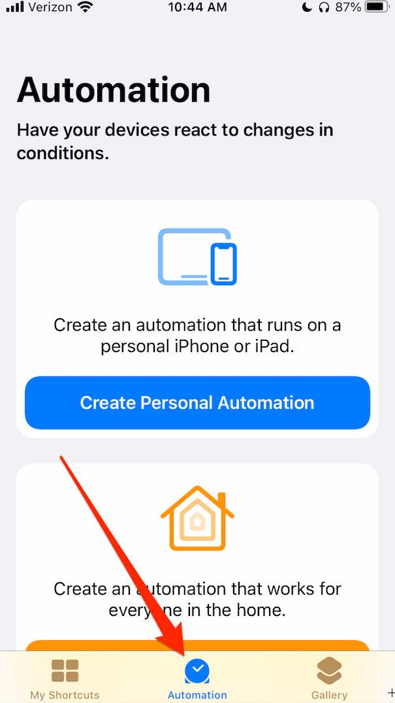
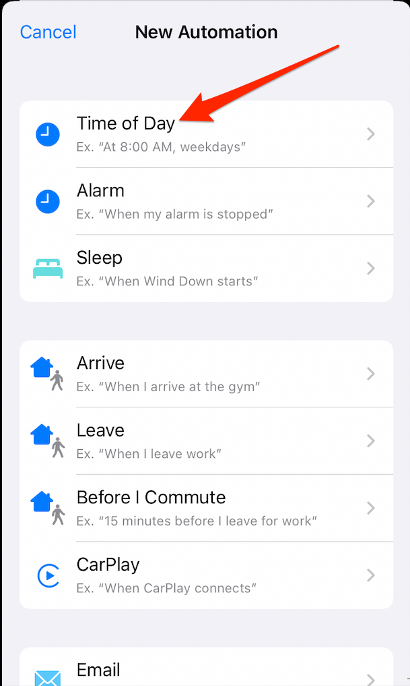
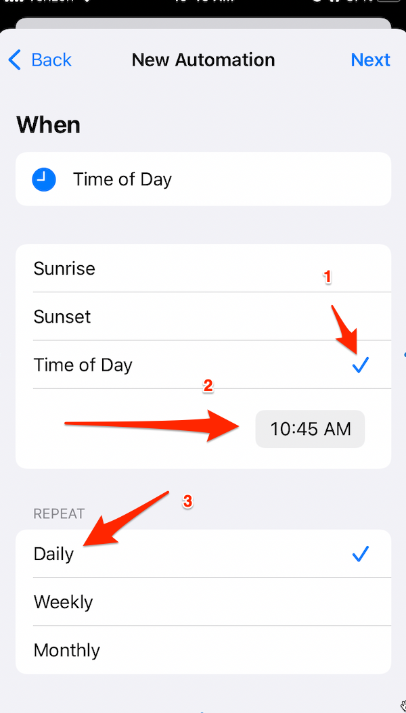
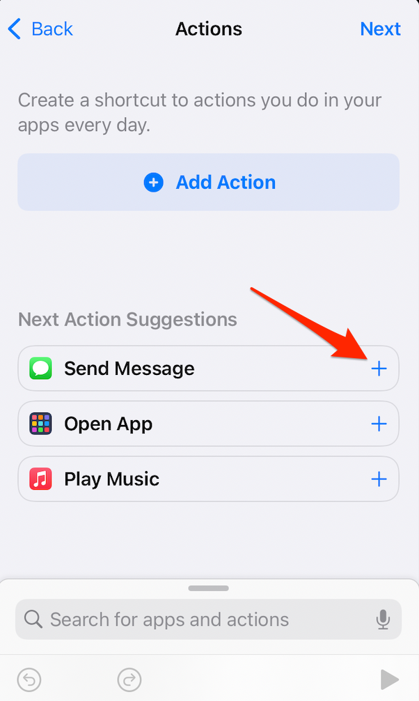
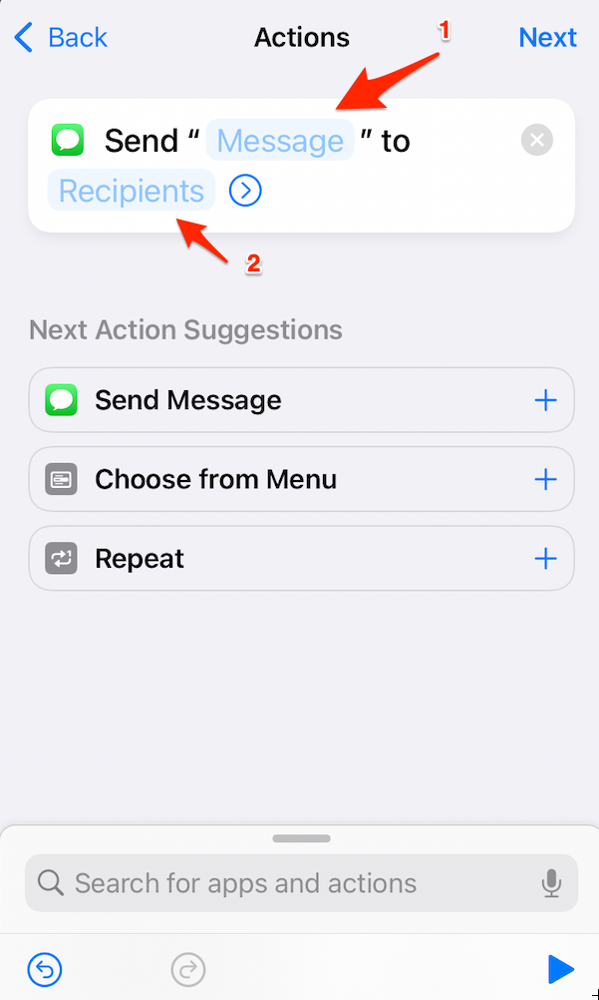
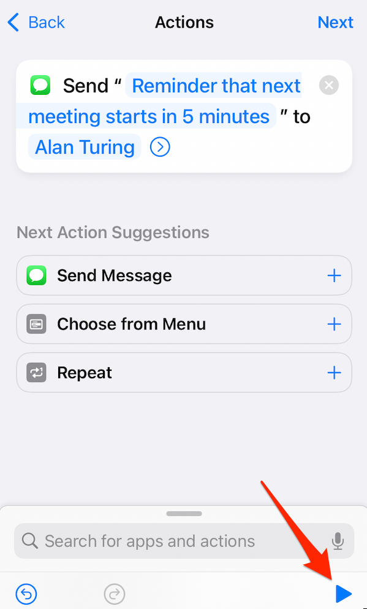
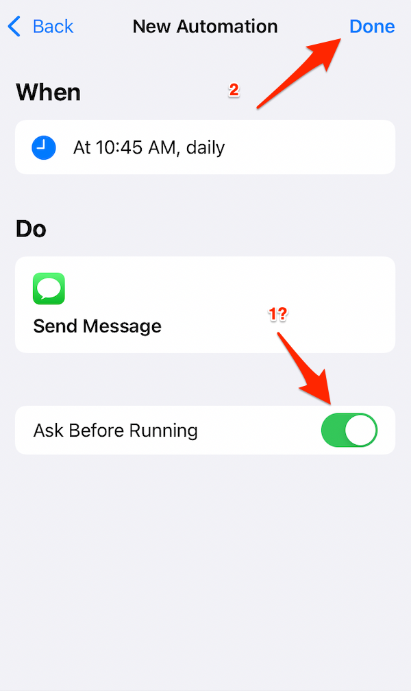
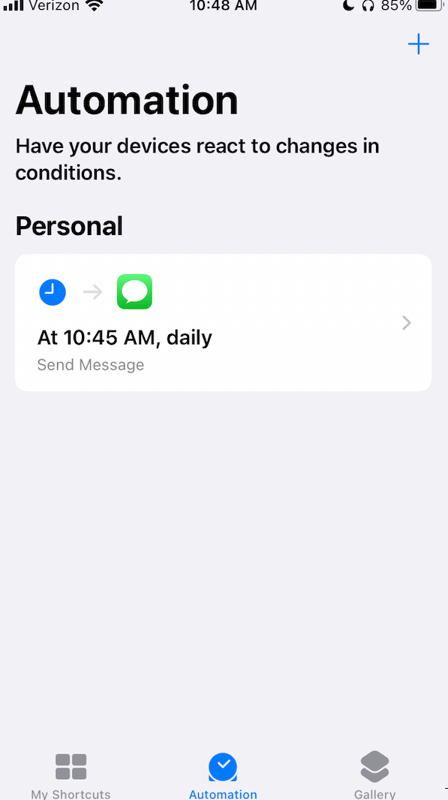
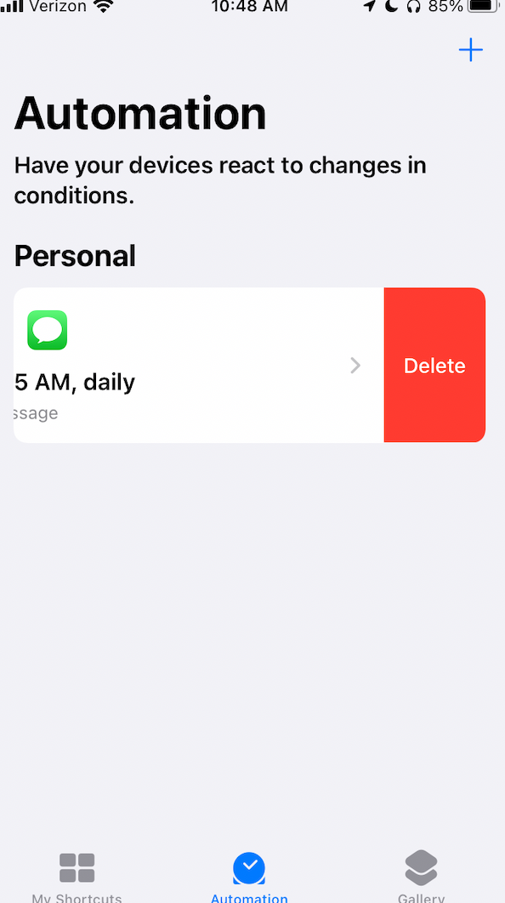

How to Schedule Text Messages
on an iPhone
The other day, my executive was in back-to-back meetings. I often send a text reminder to my executive five
minutes before the next meeting's starting time in situations like this. If you're an executive assistant
like I am, you have probably found yourself under similar circumstances.
I set multiple reminders for myself in Outlook and on my mobile device to send meeting notification texts to
my executive at predetermined times. While setting up numerous reminders for myself is an acceptable
approach, I thought about ways to improve this workflow. After all, sometimes, even one hundred reminders
aren't enough, nor does it protect against our propensity as humans to get very busy and forget things every
so often.
I've been automating various other processes recently, so my first thought was to look at ways to schedule
text messages on an iPhone, which happens to be the type of mobile device provided at my place of
employment.
It didn't take long before I found a suitable solution!
With the Shortcuts application for Apple mobile devices, users can leverage automation to send text messages
at exact times. This implementation of process automation has been a super helpful addition to my meeting
reminder workflow. Perhaps it will help you as well.
Below is my Schedule application workflow to schedule a text message meeting reminder to my hypothetical
executive,
Alan Turing.
Step 1:
Open the application and click the Automation icon.

Step 2:
Click the Time of Day automation option.

Step 3:
Click the Time of Day automation option.
Set the time you'd like the message to be sent.
Select the Repeat Daily option.

Step 4:
Select Send Message from the Next Action Suggestions section.

Step 5:
Click Message then enter the message you'd like to send.
Click Recipients then enter or select the contact who will receive the text message.

Step 5 continued:
Example with message with hypothetical executive, Alan Turing.

Step 6:
If you'd like to be asked before the scheduled message is sent, turn on (slide to green) the Ask
Before Running option.
Otherwise, click Done in the upper right corner.

Step 7:
The Automation section will now display the newly created scheduled message details.

Step 8:
To delete any of your scheduled automations, swipe to the left to display the Delete option.
Otherwise, this particular message will continue to send daily at 10:45 am.

I hope this helps!
Until next time,
Eric